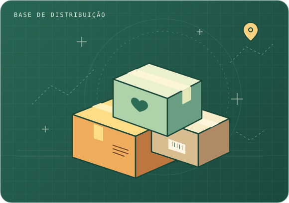

Solicitar apoio
Cadastre sua família, informe suas necessidades e inclua cães e gatos no atendimento.
CENTRAL DE APOIO · RIO GRANDE DO SUL
Conectamos doações e voluntários a famílias afetadas no Rio Grande do Sul. Solicite apoio, contribua ou acompanhe o caminho da sua entrega.

01 / SERVIÇOS DO PORTAL
Cadastre sua família, informe suas necessidades e inclua cães e gatos no atendimento.
Veja como contribuir com alimentos, higiene, roupas sem uso ou uma doação em dinheiro.
Escolha como ajudar no recebimento, na triagem, na montagem de kits ou na distribuição.
02 / RASTREIO
Consulte o protocolo para ver em que etapa está a sua entrega.
03 / O QUE DISTRIBUÍMOS
Os itens variam conforme a necessidade e o estoque disponível na central.
Alimentos não perecíveis e itens de higiene pessoal para uma pessoa.
Alimentos e higiene para o grupo familiar, com fraldas conforme a necessidade e o estoque.
Ração adequada à espécie, pote para água e itens básicos de higiene para cães e gatos, conforme o estoque.
Informe quantos cães e gatos vivem com a família para solicitar o Kit Veterinário junto de um kit de atendimento ou separadamente.
Conheça os tipos de atendimento em cenas ilustrativas.
REGISTRO DE ATENDIMENTO
Veja como os kits da central podem chegar às famílias e a seus animais.
Cenas ilustrativas geradas por IA. As imagens representam situações fictícias de entrega.
Uma família recebe seu kit no ponto de distribuição.
Uma entrega com itens de higiene pessoal e toalhas.
Uma família recebe itens básicos para cuidar de seu cachorro.